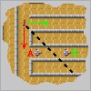

A chaque niveau , tu dois sortir du labyrinthe après avoir détruit tous les globules jaunes .
Tu les élimines par contact ou en leur tirant dessus .
Ton temps est limité et de plus , aucun globule jaune ne doit sortir avant toi , mais tu peux bloquer leur sortie par une barrière provisoire de 3 secondes une fois par niveau .
Attention aux serpents rouges ! S'ils te touchent , tu meurs . Heureusement , s'il te reste des balles , tu peux te défendre .
A chaque niveau , tu obtiens au moins une balle supplémentaire mais le total de tes balles est plafonné à 5 . Utilise les avec parcimonie !
Par ailleurs , tu remarqueras que le labyrinthe devient invisible les 20 dernières secondes , ce qui ne te facilite pas la tâche ...
Ton but est de réaliser le meilleur score : un globule détruit par contact rapporte deux points ,un globule détruit par balle rapporte un seul point .
TOUCHES :
haut : Flèche "Haut" droite : Flèche "Droite" bas : Flèche "Bas" gauche : Flèche "Gauche"
tir : Touche "Espace" barrière : Touche "Entrée"
immobilsation : Touche w ( à presser en même temps que les flèches pour pivoter sur place)
Remarque 1 : si tu t'approches d'un oeuf , il s'ouvre. Un oeuf de serpent te détecte de plus loin qu'un oeuf de globule , ce qui permet de les distinguer .

Remarque 2 : les serpents rouges te pousuivent sans tenir compte des murs, donc, dans l' exemple ci-contre, si tu es en B, tu échappes au serpent alors que si tu es en A, tu es mal parti!